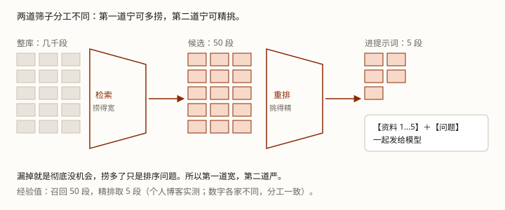

同一个知识库，两个问题。一个是查编号："E-2107 是什么意思？"另一个是问症状："发烧了要怎么处理？"
字面匹配答得了第一个，答不了第二个。语义检索正好相反。你没法提前知道用户会问哪一种。
怎么办？两种一起开，各排一个榜单，再把两个榜单合成一个。合成之后再精挑一道。这一课讲的就是这两步。
学完这课，你能说清：两种检索为什么必须搭配、榜单怎么合成、重排在补什么、以及每一步各花多少代价。
混合检索 ＝ 字面匹配和语义检索各排一个榜，用名次合成一个。重排 ＝ 把捞回来的候选逐段跟问题对读一遍，精挑出进提示词的那几段。
整课的改进都发生在检索侧。模型一个没换。
第 5 课留了个缺口：嵌入分不清同名不同物，也不认识生僻词。补缺口的思路很朴素。一种方法会犯的错，往往正好是另一种方法的强项。
还是开头那两个问题。字面匹配数的是"问题和段落共有的字词组合"，语义检索比的是"意思近不近"。同一份资料、同一组段落，两种方法各排一个榜单，结果如下。
| 查编号 E-2107 | 问「发烧了怎么办」 | |
|---|---|---|
| 字面匹配 | 赢。编号直接撞上，分数明显领先 | 翻车。文档写的是「发热」「降温」，字面没撞上，给 0 分 |
| 语义检索 | 翻车。2107 和 2108 被看成一回事，两段打成同一分 | 赢。换个说法也找得到 |
两处翻车的位置不同，才有互补的余地。结论一句话：字面匹配输在"换个说法"，语义检索输在"精确字面"。
第 1 课那句"稀疏看字面撞没撞，稠密看意思近不近"，到这里有了正反两个例子。
先把词定下来。检索这一步也叫召回：从库里把可能有用的段先捞回来。"字面匹配"那一支常被称为稀疏检索（BM25 是它的代表），"语义检索"那一支叫稠密检索。两种一起用，就是混合检索。标题里的"多路召回"，指的就是这两路。
两种一起开，马上遇到一个技术问题：两个榜单怎么合成一个。
最直觉的办法是把分数加起来。这个办法不成立。字面匹配分和语义相似度是两把不同的尺子量出来的，刻度完全不同。Pinecone 的官方指南写得很直接：这类分数放在不同的刻度上，相加或取平均都没有意义，而且往往是一个信号压掉另一个。取平均也一样，分数量级差得多的时候，平均值被大的那个牵着走。
要把两个榜单合成一个，得先换掉比的东西。
RRF（倒数排名融合）的做法是：分数全扔掉，只看名次。名次是两个榜单共有的语言，不管哪种尺子，"排第几"总能互相比较。
具体算起来很小。每个榜单给每一段打一个分：1 ÷（60 ＋ 这段在这个榜单里的名次）。两个榜单的这一项相加，再按总分从大到小排。一段在两个榜单里都靠前，总分就高。
没出现在某个榜单里的段，从那个榜单一分都拿不到。这句话等下有用。
那个 60 有出处。它是 RRF 原始论文实测的经验值，Pinecone 的默认设置也是它。它把名次压得很平：第 1 名只比第 2 名多 1.6%，第 10 名还有第 1 名 87% 的权重。名次压得平，奖励的就是"两个榜单都说它好"，而不是"某一个榜单的冠军"。k 调得更大，单榜冠军的话语权更小；k 调小，冠军更强势。
想偏向某一侧也有办法：把那一侧的 1/(k+名次) 乘个系数。Pinecone 把这种加权列为相关性调优的杠杆。默认不加权，先跑起来再说。
两个词别混。混合检索是"把两种信号合起来用"这个大思路，RRF 只是合的一种具体方法。Pinecone 的文档专门提醒过这一点。
RRF 有个前提：它假设每个榜单的名次都有意义。这个前提破了，融合就会被带偏。
脚本里有个现成的例子。问题 B 是"发烧了要怎么处理"，字面匹配给五个段全打了 0 分。0 分的意思是一个词都没撞上，这批段落谁也不比谁更相关。但排序函数照样吐出一个名次来，顺序就是段落本来的编号顺序。
RRF 把这个名次当真了。结果毫无关系的段 1 冒到第一，真正该命中的段 3 反而排在第二。
解法只有一个：没命中的段不进榜。给"命中"设个阈值，分数为 0 的段直接排除，只让真有分的段参与融合。过滤之后，问题 B 的榜单里只剩段 3 一段，正是该命中的那段。宁可只剩一个，也别混进噪音。
对照一下官方实现会更清楚。Pinecone 的 RRF 里，没出现在某个榜单里的段，就从那个榜单拿不到分。你要防的是另一种情况：段在榜单里躺着，但全都是 0 分并列。前者是真缺席，后者是假名次。
到这里，检索已经能"找得比较全"了。但找回来的段落还不能直接塞给模型。行业里通行的做法是两道筛子：第一道捞得宽，第二道挑得精。

为什么要"宁可多捞"？因为漏掉就是彻底没机会，捞多了只是排序问题。
工程经验值（个人博客实测，标注为经验）：先召回 50 段，再精排取 5 段。数字各家不同，思路一致。
每一步各买多少，有一组实测数字。第 2 课贴过 Anthropic 的那组，这里拆开看每步的收益：
普通 RAG 5.7% 失败
＋ 给每段补上一句「这段在讲什么」 3.7%
＋ 再叠上关键词检索 2.9%
＋ 再加一道重排序 1.9%三步改进，失败率从 5.7% 降到 1.9%。这三步全在检索侧：补的是段落的背景，合的是两种信号，精挑的是最终那几段。没有一步是换更强的模型。
现在说第二道筛子。重排（rerank）把捞回来的候选重新排一次序，排在最前的几段才进提示词。
它比嵌入准，原因在读法不同。嵌入是各算各的：问题压成一根向量，每段各压一根，算的时候彼此看不见。重排模型不是这样。它把问题和段落拼在一起，一次读一对，直接给这一对打分。Cohere 的文档写明了这个机制：每个文档的 token 会和问题的 token 合并计算。两者能互相对上号，判断自然更准。
更准的代价是更贵。每一对都要完整过一遍模型，候选一多就付不起。所以它只用在捞回来的几十段上，不用在全库上。"先捞宽，再挑精"的分工就是这么来的。
重排还有个好处：它不碰索引。这一步叠在检索结果之上，换重排模型不用重建库。这跟换嵌入模型是两回事，第 5 课那个"整库重算"的硬代价不适用于它。
重排的输出还有个用处：它是校准过的分，可以直接设阈值。低于阈值的段丢掉，整批都低于阈值，就回答"资料里没有"。Cohere 把这种用法列为典型场景之一：设阈值，触发再查一次，或者返回"不知道"。
回头看这一课的三样东西：混合检索、RRF 融合、重排。它们都在检索侧动手，模型一个没换。代价也明码标价：
所以别当免费午餐。单用一种检索已经够好的场景，不必付这个成本。
上不上、上哪几样，拿第 9 课那套尺子量过再定。
脚本在工作区：exercises/rag/0006-sparse-vs-dense.py。两道题、两个榜单，两种方法各翻一次车，再用 RRF 合成。它不调任何模型。
python exercises/rag/0006-sparse-vs-dense.pyWindows 终端若中文乱码，先执行 chcp 65001。"稠密"在脚本里是玩具，按同义词表归一再比字。真的用文本嵌入模型，但两个榜单各会翻车这件事一模一样。下面是融合那段的输出摘录。
问题 B
稀疏榜 ：段1 > 段2 > 段3 > 段4 > 段5
稠密榜 ：段3 > 段1 > 段2 > 段4 > 段5
RRF 融合 ：段1 > 段3 > 段2 > 段4 > 段5
⚠ 看问题 B 的融合结果：【段 1 冒到了第一】，可它跟问题毫无关系。
因为稀疏榜给所有段都是 0 分——【一个全是并列的榜，名次本身就是噪音】，
而 RRF 会把每个名次都当真。
过滤之后再融：
问题 A：段1 > 段2 > 段4 > 段5
问题 B：段3两处要看懂：
六道题，翻车的位置、融合的算式、重排的机制各过一遍。
Q1 两个榜单的分数为什么不能直接相加？
Q2 RRF 把名次压得很平（第 10 名还有第 1 名 87% 的权重），这意味着它奖励什么？
Q3 一个榜单给所有段都打了 0 分，还是给出了名次。这时候该怎么做？
Q4 重排为什么比嵌入排得准？
Q5 重排为什么只用在捞回来的候选上，不全库用？
Q6 用户查"E-2107 是什么意思"，语义检索把 E-2108 也排了上来。该靠什么补上？
回上一课：RAG · 第 5 课 · 嵌入与相似度（嵌入的失手，这课来补）
顺着往下：RAG · 第 7 课 · 查询工程：原话不是查询——检索器没换，换的是喂给它的那句话
相关：RAG · 第 9 课 · 两种典型翻车（检索翻没翻，怎么判）
术语表：稀疏 / 稠密检索 · 混合检索 / RRF / 重排